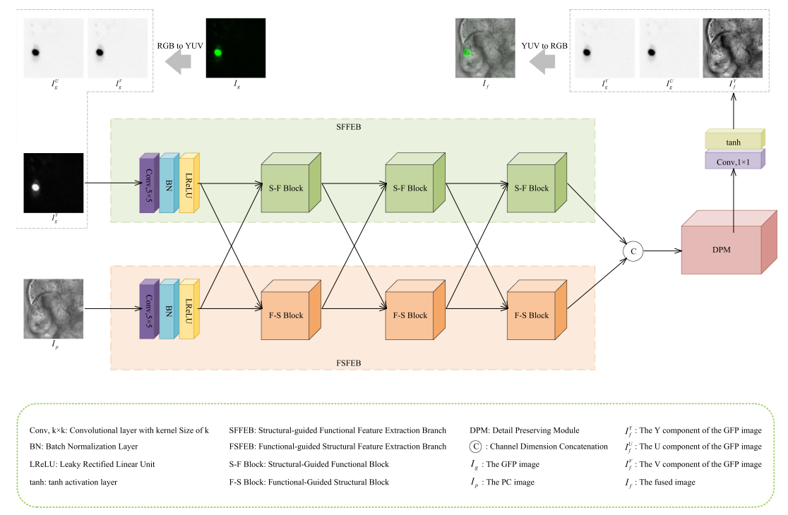

Wei Tang (唐伟)
I am an Assistant Professor at the School of Computer Science and Technology ,
Tongji University , Shanghai, China.
I am open to exciting research collaborations. If you are interested, please feel free to contact me.
I am looking for self-motivated Ph.D/M.S./Undergraduate students. Feel free to reach out!
News
23-May-2025, I am going to give a Talk on YDTR .
14-May-2025, I am going to give a Talk on MATR .
30-Apr-2025, I am invited to serve as a reviewer for PLOS One .
24-Apr-2025, I am invited to serve as a reviewer for Frontiers in Artificial Intelligence .
02-Apr-2025, I am invited to serve as a reviewer for IJIG .
01-Apr-2025, I am invited to serve as a reviewer for IET Image Processing .
26-Mar-2025, I am invited to serve as a reviewer for Frontiers in Physics .
22-Mar-2025, I am invited to serve as a reviewer for IJCAI2025 .
06-Dec-2024, I am invited to serve as a reviewer for Signal Image and Video Processing .
03-Dec-2024, I am invited to serve as a reviewer for Discover Imaging .
20-Nov-2024, I am invited to serve as a reviewer for Neurocomputing .
20-Nov-2024, I am currently a member of
China Graphics Society .
14-Nov-2024,
DATFuse is selected as an ESI Hot Paper .
14-Nov-2024,
YDTR is selected as an ESI Hot Paper .
14-Nov-2024,
FATFusion is selected as an ESI Highly Cited Paper .
14-Nov-2024, I am invited to serve as a reviewer for IEEE TNNLS .
11-Nov-2024, I am invited to serve as a reviewer for Electronic Research Archive .
25-Oct-2024, I am currently an Assistant Professor at the School of Computer Science and Technology,
Tongji University , Shanghai, China.
25-Oct-2024,
YDTR has been identified as being one of the IEEE Signal Processing Society's top 25 downloaded articles
from Sept. 2023 - Sept. 2024 for IEEE Transactions on Multimedia on IEEE Xplore®.
17-Oct-2024,
EAT is accepted by IEEE TMM .
23-Sep-2024, I am invited to serve as a reviewer for Pattern Recognition .
08-Sep-2024,
MATR is reported by iBioMedInfo .
17-Aug-2024, I am invited to serve as a reviewer for ACM TIST .
02-Aug-2024, I am invited to serve as a reviewer for
Engineering Applications of Artificial Intelligence .
20-Jul-2024,
ITFuse is accepted by
Pattern Recognition .
13-Jul-2024,
TCCFusion is selected as an ESI Highly Cited Paper .
01-Jun-2024, I am honored as an Outstanding Graduate of Wuhan University.
15-May-2024, I am invited to serve as a reviewer for Computerized Medical Imaging and Graphics .
10-May-2024,
DATFuse is selected as an ESI Highly Cited Paper .
15-Mar-2024,
YDTR is selected as an ESI Highly Cited Paper .
13-Mar-2024,
MATR has been identified as being one of the IEEE Signal Processing Society's top 25 downloaded articles from Sept. 2022 - Sept. 2023 for IEEE Transactions on Image Processing on IEEE Xplore®.
14-Feb-2024,
FATFusion is accepted by IPM .
05-Feb-2024, I am invited to serve as a reviewer for IEEE JBHI .
20-Jan-2024, I am invited to serve as a reviewer for IEEE TCI .
18-Jan-2024, I got the Ruan Liping Scholarship of Wuhan University.
10-Jan-2024, I am invited to serve as a reviewer for IEEE TMM .
28-Dec-2023, I am honored as an Excellent Graduate Student of Wuhan University.
19-Dec-2023, I am invited to serve as a reviewer for IEEE Sensors Journal .
07-Dec-2023, I got the First-Class Scholarship of Wuhan University.
07-Oct-2023, I am invited to serve as a reviewer for CAAI Transactions on Intelligence Technology .
14-Sep-2023,
MATR is selected as an ESI Highly Cited Paper .
18-Jul-2023, I am invited to serve as a reviewer for IEEE TIP .
11-Jul-2023, I am invited to serve as a reviewer for IEEE GRSL .
26-Feb-2023, I am invited to serve as a reviewer for TVCJ .
19-Feb-2023, I am invited to serve as a reviewer for IEEE TIM .
10-Jan-2023, I got the Longfor Scholarship of Wuhan University.
02-Jan-2023,
DATFuse is accepted by IEEE TCSVT .
31-Dec-2022,
TCCFusion is accepted by
Pattern Recognition .
10-Dec-2022, I am honored as an Excellent Graduate Student of Wuhan University.
06-Dec-2022, I got the First-Class Scholarship of Wuhan University.
31-Oct-2022, I am invited to serve as a reviewer for IEEE TCSVT .
16-Jul-2022,
YDTR is accepted by IEEE TMM .
14-Jul-2022,
MATR is accepted by IEEE TIP .
11-Jun-2022, I am invited to serve as a reviewer for Information Fusion .
07-Jun-2022, I am invited to serve as a reviewer for BIBE 2022 .
Research Interests
Artificial Intelligence
Image Processing
Computer Vision
Information Fusion
Biomedical Image Analysis
Selected Publications
MATR: Multimodal Medical Image Fusion via Multiscale Adaptive Transformer
Wei Tang , Fazhi He, Yu Liu, and Yansong Duan
IEEE Transactions on Image Processing
JCR: Q1 , TOP , CCF: A ,
CAAI: A , IF: 10.8 ,
ESI Highly Cited Paper 241
IEEE Signal Processing Society's top 25 downloaded articles
Reported by iBioMedInfo
Code ,
Bibtex
YDTR: Infrared and Visible Image Fusion via Y-shape Dynamic Transformer
Wei Tang , Fazhi He, and Yu Liu
IEEE Transactions on Multimedia
JCR: Q1 , TOP , CAAI: A ,
IF: 8.4 , Cite: 259
ESI Hot Paper ESI Highly Cited Paper
IEEE Signal Processing Society's top 25 downloaded articles
Code ,
Bibtex
EAT: Multi-Exposure Image Fusion with Adversarial Learning and Focal Transformer
Wei Tang and Fazhi He
IEEE Transactions on Multimedia
JCR: Q1 , TOP , CAAI: A ,
IF: 8.4 , Cite: 1
Code ,
Bibtex
DATFuse: Infrared and Visible Image Fusion via Dual Attention Transformer
Wei Tang , Fazhi He, Yu Liu, Yansong Duan, and Tongzhen Si
IEEE Transactions on Circuits and Systems for Video Technology
JCR: Q1 , TOP , IF: 8.3 , Cite: 223
ESI Hot Paper ESI Highly Cited Paper
Code ,
Bibtex
TCCFusion: An Infrared and Visible Image Fusion Method based on Transformer and Cross Correlation
ITFuse: An Interactive Transformer for Infrared and Visible Image Fusion
Wei Tang , Fazhi He, and Yu Liu
Pattern Recognition
JCR: Q1 , TOP , IF: 7.5 , Cite: 15
Code ,
Bibtex
FATFusion: A Functional–Anatomical Transformer for Medical Image Fusion
Green Fluorescent Protein and Phase Contrast Image Fusion via Detail Preserving Cross Network

Wei Tang , Yu Liu, Juan Cheng, Chang Li, and Xun Chen
IEEE Transactions on Computational Imaging
JCR: Q1 , IF: 4.2 , Cite: 35
Code ,
Bibtex
A Phase Congruency-based Green Fluorescent Protein and Phase Contrast Image Fusion Method in Nonsubsampled Shearlet Transform Domain
Green Fluorescent Protein and Phase Contrast Image Fusion via Dual Attention Residual Network
Wei Tang , Lei Wang, and Yu Liu
IEEE International Conference on Medical Imaging Physics and Engineering (ICMIPE ) , 2021.
Cite: 7,
Bibtex
Selected Awards
2024, Outstanding Graduate , Wuhan University.
2024, Ruan Liping Scholarship , Wuhan University.
2023, Excellent Graduate Student , Wuhan University.
2023, First-Class Scholarship , Wuhan University.
2023, Longfor Scholarship , Wuhan University.
2022, Excellent Graduate Student , Wuhan University.
2022, First-Class Scholarship , Wuhan University.
2020, National Scholarship , Ministry of Education.
2019, Second Prize for Band A in 2019 National English Competition for College Students (NECCS, 3% ).
Society Services
Journal Reviewer:
Conference Reviewer:
Society Membership:
IEEE Member (since 2022)
China Graphics Society Member (since 2024)
CSIG Student Member (since 2023).
No.
Visitor Since Aug 2022.


{kind=link}
{kind=link}
{kind=link}
{kind=link}
{kind=link}
{kind=link}
{kind=link}